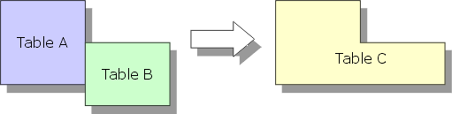
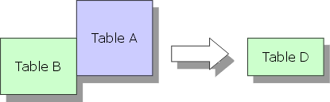
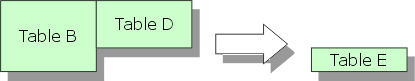
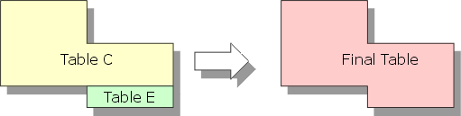

Symmetrical Outer Join
Alpha Five allows you to create a symmetrical outer join with several steps.
You join table A to B -> C, including all of table A's records.

Then you join B to A -> D, including only the records where you have a matching link field.

You subtract D from B -> E.

Then you append C to E.

See Also
Append Operations, Intersect, Join and Subtract Operations, Create Operation